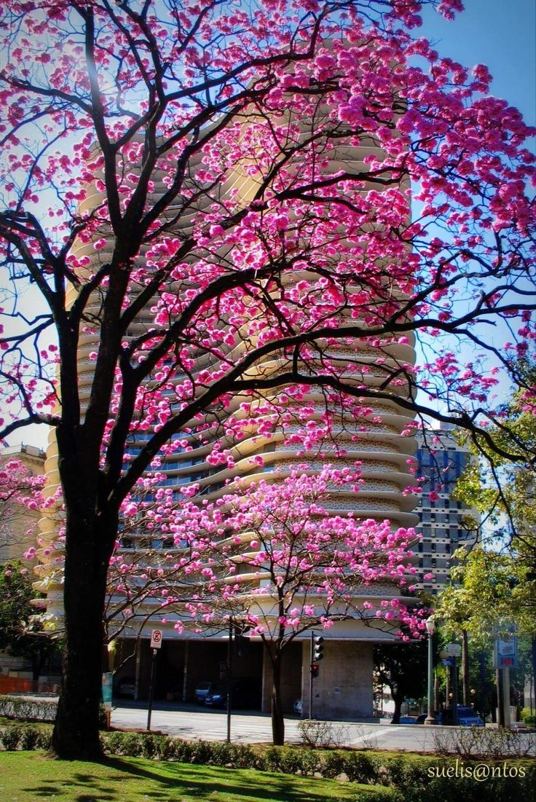

Belo Horizonte, capital de Minas Gerais, foi inaugurada em 1897 como a primeira cidade planejada do Brasil. Projetada para substituir Ouro Preto como capital, a cidade nasceu em um período de modernização e crescimento econômico. Inspirada em conceitos urbanísticos modernos, Belo Horizonte foi construída com ruas largas e uma disposição organizada, cercada por montanhas e paisagens naturais. Ao longo do século XX, a cidade se expandiu rapidamente, tornando-se um importante centro industrial, cultural e econômico no país. Hoje, é reconhecida pela sua qualidade de vida e rica herança cultural.
A herança de Belo Horizonte reflete sua rica diversidade cultural e histórica, marcada pela mistura de influências que moldaram a cidade ao longo do tempo. Desde sua fundação no final do século XIX, BH preserva o legado da arquitetura modernista, com edifícios icônicos como a Igreja da Pampulha, projetada por Oscar Niemeyer. Além disso, a cidade é um importante polo de música e arte, com forte presença do samba, do sertanejo e, claro, do Clube da Esquina, que revolucionou a música brasileira. A gastronomia mineira também faz parte dessa herança, com pratos tradicionais como o pão de queijo e o feijão tropeiro. Belo Horizonte, assim, carrega consigo uma identidade única que une modernidade e tradição, sendo um reflexo das influências culturais, arquitetônicas e culinárias que fazem parte da vida de seus habitantes.